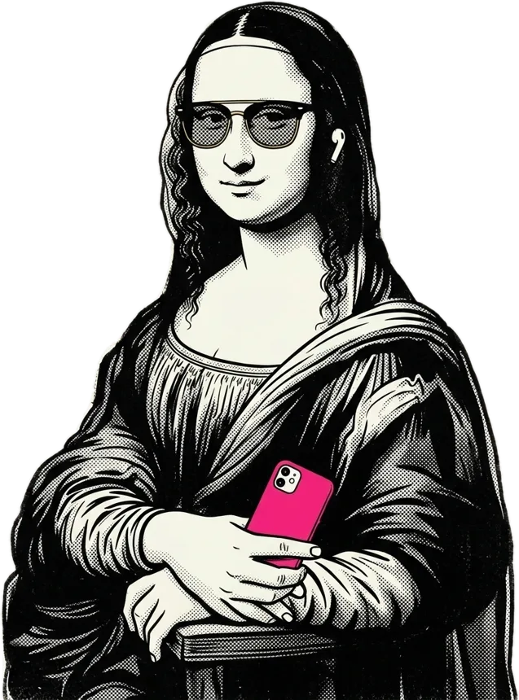
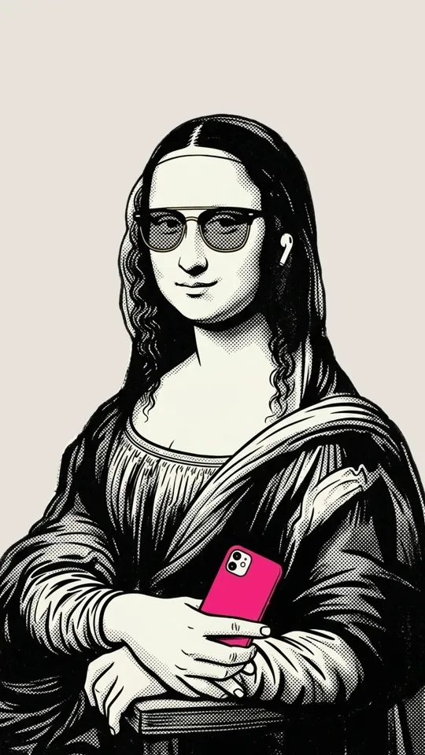
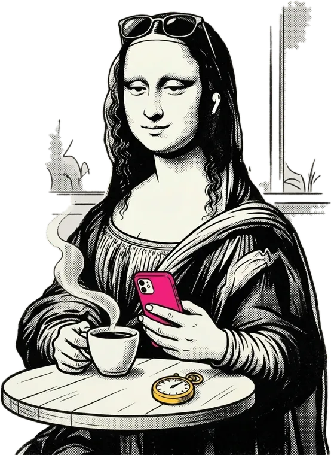
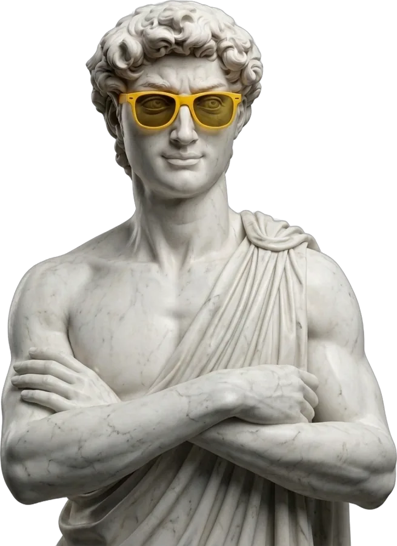

Guía · 1 de 9
Guía · 1 de 9
Guía · Edita tu reelTu video, very sweeteditado
en minutos
Silencios cortados, subtítulos con tu letra, gráficos, sonidos y color. Y programado para que se publique solo en tu Instagram.
Lo que grabaste con el celular
Sube todas las tomas, así tengan errores o silencios largos. No las cortes tú: eso lo hace la herramienta.
Tus tomas

0:14
0:090:210:12Y la herramienta edita por ti
Escoges el estilo una vez y listo. Mientras tanto puedes cerrar la página: el video se hace solo.
- Cortando los silencios
- Poniendo los subtítulos
- Escogiendo los gráficos
- Buscando los sonidos
- Dándole color
Fuera las pausas
Las partes grises son silencios y tomas repetidas. Son las que hacen que la gente se vaya.
Con las letras de tu marca
Cada palabra sale justo cuando la dices, y la que suena se marca con tu color.
Aparecen solos
Cuando dices una lista, un número o un antes y después, sale un gráfico animado justo en ese momento.
Que se sienta pro
Se publica solo
Míralo una vez, cambia lo que quieras y escoge el día. Ese día sale en tu Instagram sin que tengas que estar pendiente.

Listo · tu turnoEdita tu próximo reel
- Silencios fuera y subtítulos con tu letra
- Gráficos, sonidos y color sin saber editar
- Programado para que se publique solo
Para hacerlo necesitas tu cuenta de Cherry Studio. Crearla es gratis.